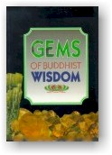

|
BuddhaSasana Home Page |
Vietnamese, with Unicode Times font |
|  |
Những Hạt Ngọc Trí Tuệ Phật GiáoGems
of Buddhist Wisdom Thích
Tâm Quang dịch |
LỜI ÔNG CHỦ TỊCH HỘI TRUYỀN GIÁO ÐẠO PHẬT TẠI MÃ-LAI-Á T ác phẩm này được phát hành lần thứ nhất vào năm 1983 để kỷ niệm lần thứ 21 Ngày Lễ Thành Lập Hội Truyền Giáo Ðạo Phật. Hội đã thu thập và phổ biến một số bài vở được viết bằng một lối văn bình dị và khúc triết nói lên nhiều khía cạnh khác nhau của Phật Giáo. Người đứng đầu đóng góp trong việc này là vị cố vấn tôn giáo, Hòa Thượng Tiến Sĩ K. Sri Dhammananda Nayaka Maha Thera, J.S.M (Tăng Thống Mã Lai - Tân Gia Ba). Các bậc học giả Phật Giáo trên khắp thế giới cũng rất hoan hỉ đóng góp vào việc này.Nhờ Hòa Thượng Tiến Sĩ K. Sri Dhammananda, các vị phụ tá nhiệt thành của Ngài và sự quan tâm đến Phật Giáo ngày càng phát triển, Hội Truyền Giáo đã phổ biến việc phát hành khắp nước và trên toàn thể thế giới. Chúng tôi nhận được nhiều thư từ khắp nơi trên thế giới tán thưởng những cuốn sách nhỏ này và yêu cầu có nhiều thêm nữa. Chúng tôi nhận thấy những cuốn sách nhỏ này, trong nhiều trường hợp, được dùng như để khai mở tâm trí nhiều người muốn hiểu biết Phật Giáo. Chi phí ấn hành các cuốn sách này do những vị hảo tâm đóng góp theo truyền thống nhân từ và vì tha nhân của Phật Giáo. Những cuốn sách nhỏ này đã được dịch và mỗi cuốn đã được in lại với số lượng hơn một trăm ngàn cuốn đã được phát hành trên khắp thế giới. Ðã đến lúc đưa các bài viết đó tới số độc giả rộng lớn hơn theo một chủ đề về lâu về dài để cuốn "Những Hạt Ngọc Trí Tuệ Phật Giáo" có thể bảo tồn tốt hơn cho thế hệ sau này. Nhiều bài đã được sửa chữa và biên tập lại để tránh sự lập đi lập lại không cân cần thiết, cùng những lời từ ngữ và chính tả. Cuốn sách này không dụng ý được đọc một mạch từ đầu đến cuối môt lúc. Mong rằng độc giả sẽ đọc mỗi bài bằng nhận thức, thong thả, cân nhắc những lý luận do mỗi tác giả trình bày trước khi sang bài khác. Những bài viết đó cũng không được sắp xếp theo hệ thống thứ tự cho nên độc giả có thể tùy thích chọn lựa bất cứ bài nào để đọc. Những tác giả trong cuốn này là những nhà học giả 'vô ngại biện tài' nổi tiếng uyên bác về Phật Giáo được các viện hàn lâm trên khắp thế giới kính trọng. Tuy thế sự khiêm tốn hết sức của họ phản ảnh trong khả năng sáng tạo về những khía cạnh hệ trọng nhất của tôn giáo chúng ta bằng một bút pháp bình dị và thẳng thắn, không hề kiêu căng, hoặc có lối văn cổ điển hay hoa mỹ khoa trương. Những bài viết ngắn gọn in trong cuốn sách truyền tải giáo lý tới thượng của Ðức Phật phù hợp với trình độ của mọi người. Nhiều bài phô bày khả năng khôi hài duyên dáng và dí dỏm gắn liền vói phương pháp giải quyết thực tế trước những vấn đề phức tạp của nhân loại. Qua những trích dẫn của tác giả, người đọc không có hiểu biết chuyên môn cũng có thể chia sẻ những tư tưởng của các nhà văn vĩ đại, cả Tây Phương lẫn Á Ðông - như Bertand Russell và Radhakrishman. Hy vọng quý độc giả cảm thấy phấn khởi tìm đọc các nguyên tác để chia sẻ trí tuệ vĩ đại của loài người. Khi đọc những bài trong bài viết này, ta có thể nhận thấy một số điều nhắc đi nhắc lại, không những chỉ về tư tưởng mà còn về các lời trích trong nguyên bản kinh sách. Mong mỏi quý vị độc giả tốt bụng hiểu tại sao lại như vậy. Các tác giả không chuyên về một đề tài đặc biệt nào. Thực ra, đa số đều cách biệt nhau về thời gian và không gian. Chẳng hạn, một bài viết cách đây 35 năm, trong khi những bài khác mới đây được viết tại Mã Lai, Sri Lanka và Âu Châu. Tuy nhiên ta có thể bắt đầu thấy tính duy nhất trong những sáng tác khác nhau - ấy là để làm sáng tỏ một số quan niệm sai lầm về Phật Giáo và cũng để nhấn mạnh đến tính chất duy nhất của những lời dạy của Ðức Phật. Thí dụ đọc đi đọc lại Kinh Kalama sẽ thấy giữa những đạo sư tôn giáo trên thế giới chỉ có mình Ðức Phật tuyên bố không ai phải chấp nhận giáo lý của Ngài mà trước hết lại không xét đến giá trị của các giáo lý ấy một cách khôn ngoan. Ðiều này thường được nhắc đến như luật lệ cơ bản của Phật Giáo. Trong các sách thường nói đến Tứ Diệu Ðế, Bát Chánh Ðạo, và ba đặc tính (vô thường, khổ đau, vô ngã). Vì là ba đặc tính này chắc chắn là sự kết tinh rực rỡ nhất của toàn bộ cấu trúc tư tưởng triết học không tìm thấy trong bất cứ tôn giáo nào. Không có sự bàn luận nào của Phật Giáo về đường lối sống mà lại không liên quan đến những đặc tính ấy, cốt lõi của Giáo Lý Ðức Phật. Người Phật Tử chẳng bao giờ mệt mỏi tuyên bố chỉ có họ là người là không có máu đổ trong việc quảng bá tôn giáo. Họ công nhận Ðức Phật đã cấm bạo lực bất cứ loại nào, và đã trích dẫn nhiều đoạn trong kinh Pháp Cú nhằm mục tiêu này. Và họ cũng nói nhiều đến Hoàng Ðế A Dục để chứng minh Pháp có thể thực hành như một đường lối sống của một quốc gia. Họ cũng nhắc đến Kinh Sigalovada để nhấn mạnh đến lời khuyên của Ðức Phật cho những ai chưa muốn từ bỏ thế giới trần tục. Ðọc kỹ những bài này chắc chắn bất cứ ai cũng nhận thấy Phật Giáo có thể đứng vững vàng trước những nghiên cứu và thử thách khoa học, đồng thời Phật Giáo còn vượt qua khoa học cống hiến cho con người mục đích của cuộc đời và giúp cho con người hiểu được bản chất của cuộc sống. Tưởng cũng cần thiết giải thích tại đây khi tiếng Pali hay tiếng Sanskrit được sử dụng, người viết đã ghi khác nhau (thí dụ: Gotama-Gautama; Sutta-Sutra; Dhamma-Dharma; Nibbana-Nirvana; Kamma-Karma; Bodhisatta-Bodhisatva; Tipika-Tripitaka, vân vân...) tuy nhiên dùng cách nào cũng không ảnh hưởng đến nghĩa được đề cập vì có sự chuyển ngữ bằng Anh Văn. Một số nhà văn thích dùng chữ hoa khi nói đến Ðức Phật, nhưng một số khác lại không. Lại nữa, một số dùng từ: "Ðức Phật", một số lại gọi Ngài giản dị: "Phật" . Chúng tôi khiêm tốn dâng lên quý vị Những Hạt Ngọc Trí Tuệ Phật Giáo trong niềm hy vọng dù quý vị không cùng quan điểm với chúng tôi, ít nhất quý vị cũng thưởng thức giáo lý của Ðức Phật và sự tu hành của Ðạo Phật, không hề thiên vị và kỳ thị. Hội Truyền Giáo Ðạo Phật tri ân sâu xa tất cả những học giả và các nhà văn đã đóng góp những bài vở quý giá, cùng quý Ông Quah Swee Kheng, Eddy Yu, quý Bà Goh Kim Mong, Akison Cheok, Daphne Chua, James Moran, Linda Moran, Ken Lee, Amelia Low (Hong Kong) và Vijaya Samarawickrama, về sự đóng góp đầy vị tha trong việc sưu tập cho tác phẩm, và đặc biệt cảm ơn Chong Hong Choo trong việc trình bày bìa sách này. Tan Teik Beng, -ooOoo- Ðầu
trang | 01
| 02 | 03 | 04
| 05 | 06 | 07
| 08 | 09 | 10
| 11 | 12 | 13
| 14 | 15 | |
Chân thành cám ơn Tỳ kheo
Thích Tâm Quang, chùa Tam Bảo, California,
đã gửi tặng phiên bản điện tử (Bình Anson, tháng 11-2001)
[Trở
về trang Thư Mục]
updated: 06-11-2001